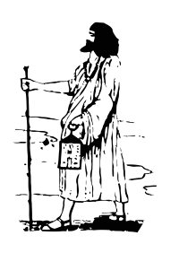

اﻟﻘﻮﻝ اﻟﻤﺄﺛﻮﺭ
ﻣﻦ ﺩﻳﻮاﻥ ﻋﺒﺪ اﻟﺮﺣﻤﻦ اﻟﻤﺠﺪﻭﺏﻋﺒﺪ اﻟﺮﺣﻤﺎﻥ اﻟﻤﺠﺬﻭﺏ اﻟﺼﻨﻬﺎﺟﻲ (ﺗﻮﻓﻲ ﻓﻲ 1568 ﺑﻤﻜﻨﺎﺱ), ﺷﺎﻋﺮ ﻭﺻﻮﻓﻲ ﺟﺰاﻳﺮﻱ ﻣﻦ ﻣﻮاﻟﻴﺪ ﺗﻴﻂ ﺑﺄﺩﺭاﺭ, اﻟﻜﺜﻴﺮ ﻣﻦ ﻗﺼﺎﺋﺪﻩ ﻭﺃﻣﺜﺎﻟﻪ اﻟﺸﻌﺒﻴﺔ ﻣﺘﺪاﻭﻟﺔ ﻓﻲ ﺟﻤﻴﻊ ﺃﻧﺤﺎء ﺑﻼﺩ اﻟﻤﻐﺮﺏ اﻟﻌﺮﺑﻲ.
ﻣﺎ اﺯﻳﻦ اﻟﻨﺴﺎ ﺑﻀﺤﻜﺎﺕ ﻟﻮ ﻛﺎﻥ ﻓﻴﻬﺎ ﻳﺪﻭﻣﻮا
اﻟﺤﻮﺕ ﻳﻌﻮﻡ ﻓﻲ اﻟﻤﺎء ﻭ ﻫﻤﺎ ﺑﻼ ﻣﺎ ﻳﻌﻮﻣﻮاﻓﺎﻋﻞ اﻟﺨﻴﺮ ﻫﻨﻴﻪ ﺑﺎﻟﻔﺮﺡ ﻭ اﻟﺸﻜﺮ ﺩﻳﻤﺎ
ﻭ ﻓﺎﻋﻞ اﻟﺸﺮ ﺧﻠﻴﻪ ﻓﻌﻠﻪ ﻳﺮﺟﻊ ﻟﻪ ﻏﺮﻳﻤﺔﻻ ﺗﺨﻤﻢ ﻻ ﺗﺪﺑﺮ ﻻ ﺗﺮﻓﺪ اﻟﻬﻢ ﺩﻳﻤﺎ
اﻟﻔﻠﻚ ﻣﺎ ﻫﻮ ﻣﺴﻤﺮ ﻭ ﻻ اﻟﺪﻧﻴﺎ ﻣﻘﻴﻤﺔﻣﻜﺘﻮﺏ ﺭﺑﻲ ﻧﻮﺩﻳﻪ ﻭ اﻟﺼﺒﺮ ﻭاﺟﺐ ﻋﻠﻴﻨﺎ
ﻭ اﻟﻠﻲ ﻧﺤﺒﻮﻩ ﻧﺨﻠﻴﻪ ﻳﺎ ﻧﺎﺱ ﻣﺎ اﻋﺘﺎﻫﺎ ﻏﺒﻴﻨﺔﺗﺨﻠﻄﺖ ﻭ ﻻ ﺑﻐﺖ ﺗﺼﻔﻰ ﻭ ﻟﻌﺐ ﺧﺰﻫﺎ ﻓﻮﻕ ﻣﺎﻫﺎ
ﺭﻳﺎﺱ ﻋﻠﻰ ﻏﻴﺮ ﻣﺮﺗﺒﺔ ﻫﻤﺎ ﺳﺒﺐ ﺧﻼﻫﺎﻻ ﺗﺨﻤﻢ ﻓﻲ ﺿﻴﻖ اﻟﺤﺎﻝ ﺷﻮﻑ اﻻﺽ اﻟﻠﻪ ﻣﺎ اﻭﺳﻌﻬﺎ
اﻟﺸﺪﺓ ﺗﻬﺰﻡ اﻻﺭﺫاﻝ اﻣﺎ اﻟﺮﺟﺎﻝ ﻻ ﺗﻘﻄﻌﻬﺎاﻟﻜﺎﺗﺒﺔ ﺗﻨﺎﺩﻱ ﻭ ﻣﻌﻬﺎ اﻟﺨﻴﺮ ﻭ ﻟﻮ ﻛﺎﻥ ﻣﻦ ﺑﻌﻴﺪ ﺗﺠﻴﻬﺎ
ﻭ اﻟﺨﺎﻃﻲ ﻋﻠﻴﻚ ﻣﻦ ﻳﺪﻳﻚ ﻳﻄﻴﺮ ﺭﺯﻗﻚ ﻣﻦ ﻗﺒﻞ ﻣﺎ ﻫﻮ ﻓﻴﻬﺎاﻻﺭﺽ ﻓﺪاﻥ ﺭﺑﻲ ﻭ اﻟﺨﻠﻖ ﻣﺠﻤﻮﻉ ﻓﻴﻬﺎ
ﻋﺰﺭﻳﻞ ﺣﺼﺎﺩ ﻓﺮﻳﺪ ﻣﻄﺎﻣﺮﻩ ﻓﻲ ﻛﻞ ﺟﻬﺔاﻟﺴﺎﺑﻖ ﻣﻦ اﻟﺨﻴﻞ ﺗﻌﺘﺮ ﻭ ﺭﺑﻲ ﻳﺪﺑﺮ ﻋﻠﻴﻬﺎ
ﻭ اﺫا ﻳﻜﻠﺦ اﻟﻔﻢ ﺭﺑﻲ ﻻ ﻳﺤﺎﺳﺒﻨﻲ ﻋﻠﻴﻬﺎﺿﺮﺑﻮﻩ ﻳﺴﺘﻬﻞ اﻟﻀﺮﺏ ﻭ اﻟﻄﺮﻳﺤﺔ ﻣﻌﻤﻮﻝ ﻋﻠﻴﻬﺎ
ﻫﺬاﻙ ﺟﺰاء ﻣﻦ ﻳﻮﺳﻊ ﻋﻠﻰ اﻟﻨﺎﺱ ﻭ ﻧﻔﺴﻪ ﻳﻀﻴﻖ ﻋﻠﻴﻬﺎاﻻﺟﻮاﺩ ﻣﺎ ﻳﻘﻮﻟﻮا ﻻ ﻻ ﻭ ﺣﺪﻳﺜﻬﻢ ﺧﻄﺎ ﻭ ﺻﻮاﺏ
اﺫا ﻗﺎﻟﻚ ﺭﻭﺡ ﻭ ﺗﻌﺎﻟﻰ ﻫﺬﻳﻚ ﻣﺎﺭﺓ اﻟﻜﺬاﺏﺑﻬﺖ اﻟﻨﺴﺎء ﺑﻬﺘﻴﻦ ﻣﻦ ﺑﻬﺘﻬﻢ ﺟﻴﺖ ﻫﺎﺭﺏ
ﻳﺘﺤﺰﻣﻮا ﺑﺎﻟﻠﻔﺎﻉ ﻭ ﻳﺘﺨﻠﻠﻮا ﺑﺎﻟﻌﻘﺎﺭﺏاﻧﺎ اﻟﻠﻲ ﺭﻗﻴﺖ ﻓﻲ ﺭﻗﻴﺔ ﻭ ﻗﻌﺪﺕ ﻣﺜﻞ اﻟﺮﺻﺎﺹ ﻧﺬﻭﺏ
ﻣﻦ ﻻ ﻳﻘﺮا ﻟﻠﺰﻣﺎﻥ ﻋﻘﻮﺑﺔ ﻳﺠﻲ ﻋﻠﻰ ﺭاﺳﻪ ﻣﻘﻠﻮﺏﺩﺭﺕ ﻣﻄﻤﻮﺭﺓ ﻓﻲ ﺭاﺱ ﺭاﻓﺮﻭﻑ ﻭ ﻣﺘﻨﺘﻬﺎ ﻣﻦ ﻛﻞ ﺟﺎﻧﺐ
ﻋﻬﺪﻱ ﺑﺎﻟﻤﻄﻤﻮﺭﺓ ﻣﺘﻴﻨﺔ ﺳﺎﻋﺔ ﻣﻦ ﺗﺤﺖ ﺷﺎﺭﺏﻣﻦ ﻻ ﻳﻄﻌﻤﻚ ﻋﻨﺪ ﺟﻮﻋﻚ ﻭ ﻻ ﻳﺤﻀﺮ ﻟﻚ ﻓﻲ ﻣﺼﺎﻳﺐ
ﻻ ﺗﺤﺴﺒﻪ ﻣﻦ ﻓﺰﻭﻋﻚ ﻗﺪ ﺣﺎﺿﺮ ﻗﺪ ﻏﺎﻳﺐﻣﺴﻜﻴﻦ ﻣﻦ ﻣﺎﺗﺖ اﻣﻪ ﻭ ﺑﺎﺑﺎﻩ ﻓﻲ اﻟﺤﺞ ﻏﺎﻳﺐ
ﻭ ﻣﺎ ﺻﺎﺏ ﺣﺪاﻥ ﻳﻠﻔﻪ ﻭ ﺿﺤﻰ ﺑﻴﻦ اﻟﺪﻭاﻭﺭ ﺳﺎﻳﺐﺣﻠﻴﻠﻪ ﻣﻦ ﻣﺎﺗﺖ اﻣﻪ ﻭ ﺑﺎﺑﺎﻩ ﻓﻲ اﻟﺤﺞ ﻏﺎﻳﺐ
ﻭ ﻣﺎ ﺻﺎﺏ ﺣﺪاﻥ ﻳﻠﻔﻪ ﻭ ﺿﺤﻰ ﺑﻴﻦ اﻟﺪﻭاﻭﻳﺮ ﺳﺎﻳﺐﻣﺎ ﻛﺎﻥ ﻛﺎﻟﺤﺮﺙ ﺗﺠﺎﺭﺓ ﻣﺎ ﻛﺎﻥ ﻛﺎﻷﻡ ﺣﺒﻴﺐ
ﻣﺎ ﻛﺎﻥ ﻛﺎﻟﺸﺮ ﺧﺴﺎﺭﺓ ﻣﺎ ﻛﺎﻥ ﻛﺎﻟﺪﻳﻦ ﻃﻠﻴﺐاﻟﺨﺒﺰ ﻳﺎ اﻟﺨﺒﺰ ﻭ اﻟﺨﺒﺰ ﻫﻮ اﻻﻓﺎﺩﺓ
ﻟﻮ ﻣﺎ ﻛﺎﻥ اﻟﺨﺒﺰ ﻣﺎ ﻳﻜﻮﻥ ﺩﻳﻦ ﻭ ﻻ ﻋﺒﺎﺩﺓﻧﻮﺻﻴﻚ ﻳﺎ ﺣﺎﺭﺙ اﻟﺸﻴﺢ ﻭ اﻟﺸﻴﺢ ﻓﻴﻪ اﻟﻤﺮﻭﺭﺓ
اﻟﻠﻲ ﺗﻈﻦ ﻭ ﺗﻘﻄﻊ ﻋﻠﻴﻪ ﺗﺎﺗﻴﻚ ﻣﻨﻪ اﻟﻀﺮﻭﺭﺓﺷﺎﻓﻮﻧﻲ اﻛﺤﻞ ﻣﻐﻠﻒ ﻳﺤﺴﺒﻮا ﻣﺎ ﻓﻴﺎ ﺩﺧﻴﺮﺓ
ﻭ اﻧﺎ ﻛﺎﻟﻜﺘﺎﺏ اﻟﻤﺆﻟﻒ ﻓﻴﻪ ﻣﻨﺎﻓﻊ ﻛﺜﻴﺮﺓﻧﻮﺻﻴﻚ ﻳﺎ ﻛﺎﺳﺮ اﻟﺨﺒﺰ اﻋﻤﻞ اﻟﻜﺴﺮﺓ اﻟﺼﻐﻴﺮﺓ
ﺭاﻩ اﻟﻠﻲ ﺟﺎﻙ ﻣﺮﻫﺎﻡ ﻳﺮﻓﺪ اﻟﻜﺴﺮﺓ اﻟﻜﺒﻴﺮﺓاﺩﻫﻦ اﻟﺴﻴﺮ ﻳﺴﻴﺮ ﻭ ﺑﻪ ﺗﺮﻃﺎﺏ اﻟﺨﺮاﺯﺓ
اﻟﻨﻘﺒﺔ ﺗﺠﻴﺐ اﻟﻄﻴﺮ ﻣﻦ ﺑﺎﺏ ﺳﻮﺱ ﻟﺘﺎﺯﺓ .اﺩﻫﻦ اﻟﺴﻴﺮ ﻳﺴﻴﺮ ﻭ ﺑﻪ ﺗﺮﻃﺎﺏ اﻟﺨﺮاﺯﺓ
اﻟﻨﻘﺒﺔ ﺗﺠﻴﺐ اﻟﻄﻴﺮ ﻣﻦ ﺑﺎﺏ ﺳﻮﺱ ﻟﺘﺎﺯﺓاﻻﻣﺎﻥ ﻳﺎ اﺑﻨﻲ اﻻﻣﺎﻥ ﻭ اﻻﻣﺎﻥ ﻳﻘﻄﻊ اﻟﺮﻗﺒﺔ
ﺣﻄﻴﺖ ﻳﺎ اﺑﻨﻲ اﻻﺣﺴﺎﻥ ﺟﺒﺖ اﻟﺒﻼء ﺑﻼ ﺳﺒﺔﻻ ﺗﺴﺮﺝ ﺣﺘﻰ ﺗﻠﺠﻢ ﻭ اﻋﻘﺪ ﻋﻘﺪﺓ ﺻﺤﻴﺤﺔ
ﻻ ﺗﺘﻜﻠﻢ ﺣﺘﻰ ﺗﺨﻤﻢ ﻻ ﺗﻌﻮﺩ ﻟﻚ ﻓﻀﻴﺤﺔاﻟﻬﻢ ﻳﺴﺘﻬﻞ اﻟﻐﻢ ﻭ اﻟﺴﺘﺮﺓ ﻟﻴﻪ ﻣﻠﻴﺤﺔ
ﺭﺩ اﻟﺠﻠﺪﺓ ﻋﻠﻰ اﻟﺠﺮﺡ ﺗﺒﺮا ﻭ ﺗﻮﻟﻲ ﺻﺤﻴﺤﺔﻧﺨﺪﻡ ﻋﻠﻰ اﻟﻤﺎﻝ ﻭ ﻧﻄﻴﺢ ﻭ اﻟﻤﺎﻝ ﺑﻴﺖ اﻟﻄﻨﺎﺧﺔ
ﺭﺟﻞ ﺑﻼ ﻣﺎﻝ ﻛﺎﻟﺮﻳﺢ ﻣﺸﺮاﺭ ﻭ ﻳﺤﺐ اﻟﺸﻴﺎﺧﺔﻳﺎ ﻣﻦ ﺩﺭﻯ ﺷﻲ اﻟﺤﺎﻝ ﻳﺼﺒﺢ ﻭ ﺗﺪﻭﻡ ﻟﻴﻨﺎ اﻟﺸﻤﻴﺴﺔ
اﻟﻠﻲ ﻋﺎﺵ ﻻﺑﺪ ﻳﻔﺮﺡ ﻭ ﺗﺰﻭﻝ ﻋﻠﻴﻪ اﻟﻐﺒﻴﻨﺔﺿﺮﺑﺖ ﻛﻔﻲ ﻟﻜﻔﻲ ﻭ ﺧﻤﻤﺖ ﻓﻲ اﻻﺭﺽ ﺳﺎﻋﺔ
ﺻﺒﺖ ﻗﻠﺔ اﻟﺸﻲ ﺗﺮﺷﻲ ﻭ ﺗﻨﻮﺽ ﻣﻦ اﻟﺠﻤﺎﻋﺔﻣﻦ ﻳﺎﻣﻨﻚ ﻛﺤﻞ اﻟﺮاﺱ ﻣﺎ ﺷﻴﻨﻚ ﺑﻄﺒﻴﻌﺔ
اﻟﺴﻦ ﻳﻀﺤﻚ ﻟﻠﺴﻦ ﻭ اﻟﻘﻠﺐ ﻓﻴﻪ اﻟﺨﺪﻳﻌﺔاﻟﺨﻴﻞ ﻫﺒﺔ ﻣﻦ اﻟﺮﻳﺢ ﻭ اﻟﺒﻞ ﻫﻲ اﻟﺸﺮﻳﻔﺔ
اﻟﺒﻐﻞ ﻗﺮﺻﺔ ﻣﻦ اﻟﻬﻨﺪ ﻭ اﻟﺤﻤﺎﺭ ﻫﻮ اﻟﻌﻴﻔﺔاﻋﻄﺎﺗﻪ اﻟﻜﻒ ﻭ اﻟﺪﻑ ﺣﺘﻰ ﺭﺩاﺗﻪ ﻣﺜﻞ اﻟﺮﻏﻴﻔﺔ
ﺗﻘﻮﻝ ﺩﻗﻴﻘﻬﺎ ﻣﺴﻠﻒ ﻭ اﻻ ﻛﺘﺴﺎﻝ ﻟﻠﻤﻌﻠﻢ ﺣﺴﻴﻔﺔﻻ ﺗﺠﺮﻱ ﻻ ﺗﻬﻘﻬﻖ ﻭ اﻣﺶ ﻣﺸﻴﺔ ﻣﻮاﻓﻘﺔ
ﻣﺎ ﺗﺪﻱ ﻏﻴﺮ اﻟﻠﻲ ﻛﺘﺐ ﻟﻚ ﻟﻮ ﻛﺎﻥ ﺗﻤﻮﺕ ﺑﺎﻟﺸﻘﺎاﻟﺼﻤﺖ اﻟﺬﻫﺐ اﻟﻤﺴﺠﺮ ﻭ اﻟﻜﻼﻡ ﻳﻔﺴﺪ اﻟﻤﺴﺎﻟﺔ
اﺫا ﺷﻔﺖ ﻻ ﺗﺨﺒﺮ ﻭ اﺫا ﺳﺎﻟﻮﻙ ﻗﻞ ﻻ ﻻاﻟﻌﺒﺪ اﻟﻠﻲ ﻛﺎﻥ ﻣﺬﻭﺏ ﻣﺎ ﺗﻌﻴﺒﻪ ﻛﺤﻮﻟﺔ
ﻭ اﻟﺤﺮ اﻟﻠﻲ ﻛﺎﻥ ﻣﺠﻌﻮﺏ ﻣﺎ ﻳﺴﻮﻯ ﻧﺺ ﻓﻮﻟﺔﻻ ﻳﻌﺠﺒﻚ ﻧﻮاﺭ ﺩﻓﻠﺔ ﻻ ﻳﻌﺠﺒﻚ ﻧﻮاﺭ ﺩﻓﻠﺔ
ﻻ ﻳﻌﺠﺒﻚ ﺯﻳﻦ ﻃﻔﻠﺔ ﺣﺘﻰ ﺗﺸﻮﻑ اﻟﻔﻌﺎﻳﻞﻋﻴﻨﻚ ﻭ ﺣﻮاﺟﺒﻚ ﺳﻮﺩ ﻭ ﺳﻮاﻟﻔﻚ ﻫﻨﺪﻭﻳﻠﺔ
ﻳﺎ ﻧﺎﺑﺸﺔ اﻻﺭﺽ ﺑﺎﻟﻌﻮﺩ اﺗﻜﻠﻤﻲ ﻳﺎ ﻫﺒﻴﻠﺔاﺫا ﻧﺎﺽ ﺭﻳﺤﻚ ﻟﻮﺡ اﻟﺘﺒﻦ ﻃﻮﻝ ﻗﺎﻣﺔ
ﻭ اﺫا ﻣﺎ ﻧﺎﺽ ﻻ ﺗﺪﻭﻱ ﻭ اﻃﻠﺐ ﻏﻴﺮ اﻟﺴﻼﻣﺔاﻟﻠﻲ ﺣﺐ اﻟﻄﻠﺒﺔ ﻧﺤﺒﻮﻩ ﻭ ﻧﻌﻤﻠﻮﻩ ﻓﻮﻕ اﻟﺮاﺱ ﻋﻤﺎﻣﺔ
ﻭ اﻟﻠﻲ ﻛﺮﻩ اﻟﻄﻠﺒﺔ ﻧﻜﺮﻫﻮﻩ ﺣﺘﻰ اﻟﻰ ﻳﻮﻡ اﻟﻘﻴﺎﻣﺔﺣﺪﻳﺚ اﻟﻨﺴﺎء ﻳﻮﻧﺲ ﻭ ﻳﻌﻠﻢ اﻟﻔﻬﺎﻣﺔ
ﻳﺪﻳﺮﻭا ﺷﺮﻛﺔ ﻣﻊ اﻟﺮﻳﺢ ﻭ ﻳﺤﺴﻨﻮا ﻟﻚ ﺑﻼ ﻣﺎءﺃﻧﺎ ﻗﻠﺒﻲ ﺭﻫﻴﻒ ﻣﺎ ﻳﺤﻤﻞ ﺗﻜﻠﻴﻒ ﻭ اﻧﺘﻢ ﻳﺎ ﻟﻄﻴﻒ ﻣﺎ ﻓﻴﻜﻢ ﺭﺣﻤﺔ
ﺭﻓﺪﺗﻮﻧﺎ ﻣﻨﻴﻦ ﻛﺎﻥ اﻟﺤﻤﻞ ﺧﻔﻴﻒ ﺳﻴﺒﺘﻮﻧﺎ ﻣﻨﻴﻦ ﺻﺮﻧﺎ ﺿﻌﻔﺔﻋﻤﻴﺖ ﻭ ﺻﻤﻴﺖ ﻭ ﺧﻔﻴﺖ ﺑﻌﺪ اﻟﺮﺯاﻧﺔ
ﻭاﺵ ﻛﺎﻧﻮﻥ ﻋﺎﻣﻴﻦ ﻧﺴﺘﻨﻰ ﻓﻴﻪ اﻟﺴﺨﺎﻧﺔاﻧﺎ اﻟﻠﻲ ﻛﻨﺖ ﺛﻘﻴﻞ ﻭ ﺭﺯﻳﻦ ﻭ ﺧﻔﻴﺖ ﺑﻌﺪ اﻟﺮﺯاﻧﺔ
ﻣﺸﻴﺖ ﻟﻠﺮﻣﺎﺩ ﻋﺎﻣﻴﻦ اﻧﺪﻭﺭ ﻓﻴﻪ ﻋﻠﻰ اﻟﺴﺨﺎﻧﺔاﻟﺸﺎﺷﻴﺔ ﺗﻀﻴﻊ اﻟﺮاﺱ اﻟﻮﺟﻪ ﺗﻀﻮﻳﻪ اﻟﺤﺴﺎﻧﺔ
اﻟﻤﻜﺴﻲ ﻳﻘﻌﺪ ﻣﻊ اﻟﻨﺎﺱ اﻟﻌﺮﻳﺎﻥ ﻧﻮﺿﻮﻩ ﻣﻦ ﺣﺪاﻧﺎﺣﻄﻴﺘﻬﺎ ﺗﺒﺮﺩ ﺟﺎء ﻣﻦ ﻟﻘﻔﻬﺎ ﺳﺨﻮﻧﺔ
ﻫﺬا ﺩﻭاء ﻣﻦ ﻳﺒﺮﺩ ﺧﻴﺮ اﻟﻤﻮاﻛﻞ ﺳﺨﻮﻧﺔﺧﻔﻴﻒ اﻻﻗﺪاﻡ ﻳﻨﻤﻞ ﻟﻮ ﻛﺎﻥ ﻭﺟﻬﻪ ﻣﺮاﻳﺔ
ﻗﻠﻴﻞ اﻻﻛﺘﺎﻑ ﻳﻨﺬﻝ ﻟﻮ ﻛﺎﻥ ﺟﻬﺪﻩ ﻋﺘﺎﻳﺔﻳﺎ ﻧﺎﺱ ﻣﻦ ﺷﺎﻑ ﺩﻣﻲ ﻏﺎﺑﺖ ﻋﻨﻲ اﻟﺴﻤﻴﺔ
ﻟﻠﺒﺤﺮ ﻧﺸﻜﻲ ﺑﻬﻤﻲ ﻳﻨﺸﻒ ﻳﻮﻟﻲ ﺗﻨﻴﺔﺣﺠﻴﺖ ﺳﺒﻊ ﺣﺠﺎﺕ ﻭ ﺗﺒﺖ ﺳﺒﻊ ﺗﻮﺑﺎﺕ
ﺭﺟﻴﺖ ﻧﻔﺴﻲ ﺗﺒﻘﻰ ﻟﻐﻴﺮﻫﺎ ﻻ ﺑﺎﺕاﻟﺪﻧﻴﺎ ﻣﺜﻠﻬﺎ ﺩﺭاﻋﺔ ﻣﺎ ﻳﻠﺒﺴﻬﺎ ﻏﻴﺮ اﻟﻠﻲ ﻳﺸﻄﺢ
ﻳﻠﺒﺴﻬﺎ ﻭ ﻳﺪﻭﺡ ﺑﻬﺎ ﺳﺎﻋﺔ ﻭ ﻳﻨﻜﺪ ﻋﻠﻴﻬﺎ ﺑﻌﺪ ﻣﺎ ﻳﻔﺮﺡاﺫا ﻫﻲ ﺩﻧﻴﺘﻚ ﻣﻬﻤﻮﻣﺔ ﻭ ﺯﻣﺎﻧﻚ ﻣﺎ ﻫﻮ ﻣﻌﻚ ﻣﻠﻴﺢ
ﺧﻠﻲ اﻟﺪﺭﺳﺔ ﻓﻲ اﻟﺘﺒﻦ ﻣﻠﻤﻮﻣﺔ ﻭ اﺳﻨﺘﻰ ﺣﺘﻰ ﻳﻬﺐ اﻟﺮﻳﺢﺟﺒﺖ اﻭﻻﺩﻱ ﻳﻘﻠﻌﻮا ﺗﻨﻜﺎﺩﻱ ﺯاﺩﻭﻧﻲ ﺗﻨﻜﺎﺩ ﻋﻠﻰ ﺗﻨﻜﺎﺩ
اﺫا ﻛﺎﻧﻮا اﻻﻭﻻﺩ ﻛﻴﻒ اﻭﻻﺩﻱ ﻻ ﻳﻌﻄﻲ ﻟﻀﺎﻧﻴﻴﻦ اﻭﻻﺩﻭﺣﺪﺓ ﺭﺧﻴﺼﺔ ﺑﻤﻴﺎﺕ ﺃﻟﻒ ﻭﺣﺪﺓ ﻏﺎﻟﻴﺔ ﺑﺠﻠﺪ ﻗﻌﻮﺩ
ﻭﺣﺪﺓ ﺗﺠﻴﺐ اﻟﺨﻴﺮ ﻣﻌﻬﺎ ﻭﺣﺪﺓ ﺗﻄﺮﺩﻩ ﺑﻌﻤﻮﺩاﻟﻨﺎﺱ ﻗﺎﻟﻮا ﻟﻲ ﻋﺠﺎﻳﺐ ﻭ اﻧﺎ ﻃﺮﻳﻘﻲ ﻣﺴﺮﻭﺭ
اﺫا ﺻﻔﻴﺖ ﻣﻊ ﺭﺑﻲ اﻟﻌﺒﺪ ﻣﺎ ﻓﻴﻪ ﺿﺮﻭﺭﻳﺎ ﺯاﺭﻉ اﻟﺨﻴﺮ ﺣﺒﺔ ﻳﺎ ﺯاﺭﻉ اﻟﺸﺮ ﻳﺎﺳﺮ
ﻣﻮﻝ اﻟﺨﻴﺮ ﻳﻨﺒﺎ ﻭ ﻣﻮﻝ اﻟﺸﺮ ﺧﺎﺳﺮاﻟﺰﻳﺖ ﻳﺨﺮﺝ ﻣﻦ اﻟﺰﻳﺘﻮﻧﺔ ﻭ اﻟﻔﺎﻫﻢ ﻳﻔﻬﻢ ﻟﻐﺎﺕ اﻟﻄﻴﺮ
اﻟﻠﻲ ﻣﺎ ﺗﺨﺮﺝ ﻛﻠﻤﺘﻪ ﻣﻴﺰﻭﻧﺔ ﻳﺤﺠﺮﻫﺎ ﻓﻲ ﺿﻤﻴﺮﻩ ﺧﻴﺮﻳﺎ ﺣﺴﺮاﻩ ﺑﻌﺪ اﻟﻠﻴﺔ ﻭ اﻟﺰﺑﺪﺓ اﻟﻄﺮﻳﺔ ﻋﺪﺕ ﻧﻜﺪﺩ ﻓﻲ ﻋﻈﺎﻡ اﻟﺮاﺱ
ﻭ ﻣﻦ ﺑﻌﺪ ﺭﻛﻮﺑﻲ ﻋﻠﻰ اﻟﺸﺎﺣﺐ اﻟﻌﻠﻮﻳﺔ ﻋﺎﺩ ﺭﻛﻮﺑﻲ ﻋﻠﻰ ﺑﻐﻞ ﻧﻜﺎﺱاﻟﺸﻮاﻑ ﻳﺸﻮﻑ ﻣﻦ ﻗﺎﻉ اﻟﻘﺼﻌﺔ ﻭ اﻟﻐﺮﺑﺎﻝ ﺗﺸﻮﻑ ﻣﻨﻪ ﻗﺎﻉ اﻟﻨﺎﺱ
اﻟﻜﻴﺲ ﻳﻌﻔﺲ ﻋﻠﻰ ﺭاﺱ اﻟﻠﻔﻌﺔ ﻭ اﻟﻌﻮاﻡ ﻳﻌﻮﻡ ﺑﺤﺮ ﻻ ﻳﻘﺎﺱاﻟﻠﻲ ﻃﺎﺭﺕ ﻣﻦ ﺳﻌﻮﺩ اﻳﺎﻣﻬﺎ ﺗﺘﺨﺒﻞ ﻓﻲ ﺭﻳﺸﻬﺎ ﻭ ﺗﻌﻴﺶ
ﻭ اﻟﻠﻲ ﻗﻌﺪﺕ ﺗﺎ ﺗﻌﻮﺱ اﻳﺎﻣﻬﺎ ﻣﺎ ﻫﻲ ﺑﺎﻟﺼﺤﺔ ﻭ ﻻ ﺑﺎﻟﺮﻳﺶاﻟﺪﻧﻴﺎ ﻣﺜﻠﻬﺎ ﺩﻻﻋﺔ ﺗﺘﻜﺮﻛﺐ ﻣﻊ ﺟﻤﻴﻊ اﻟﺪﻻﻉ
اﻟﺤﺎﺫﻕ ﻳﻌﻄﻲ ﻣﻌﻬﺎ ﺳﺎﻋﺔ ﻭ اﻟﺠﺎﻳﺢ ﻏﺪﻯ ﻣﻌﻬﺎ ﻗﺎﻉاﻟﺪﻧﻴﺎ ﻣﺜﻠﻬﺎ ﺩﻻﻋﺔ ﺗﺘﻘﺮﻗﺐ ﻣﺎ ﺑﻴﻦ اﻟﺪﻻﻉ
ﻣﺎﺫا ﻟﺤﻘﻮﻫﺎ ﻣﻦ ﻃﻤﺎﻋﺔ ﻭ ﺭﻣﺘﻬﻢ ﻓﻲ ﺑﻴﺮ ﻣﺎ ﻟﻪ ﻗﺎﻉاﺣﺮﺙ ﻳﺎ اﻟﺤﺮاﺙ ﻭ ﻃﻴﺐ ﺭاﺱ اﻟﻤﺮاﺟﻊ
ﺭاﻩ ﻣﺎﻝ اﻟﺘﺠﺎﺭ ﻣﺎ ﺯاﻝ ﻟﻴﻚ ﺭاﺟﻊﻣﺎ ﻳﺮﻗﺪ ﻓﻲ اﻟﻠﻴﻞ ﻣﻬﻤﻮﻡ اﻟﻠﻲ ﻳﺤﻤﻞ اﻟﺬﻝ ﻣﺎﻧﻊ
ﻣﺎ ﻳﻐﺴﻞ اﻟﻌﺮﺽ ﺻﺎﺑﻮﻥ ﻣﺎ ﻳﻘﻠﺐ اﻟﻘﻠﺐ ﺻﺎﻧﻊاﻟﻄﻴﺮ اﻟﻄﻴﺮ ﻣﺎ ﻇﻨﻴﺘﻪ ﻳﻄﻴﺮ ﻣﻦ ﺑﻌﺪ ﻣﺎ ﻭاﻟﻒ
ﺧﻠﻰ ﻗﻔﺼﻲ ﻭ ﻋﻤﺮ ﻗﻔﺺ اﻟﻐﻴﺮ ﺭﻣﺎﻧﻲ ﻓﻲ ﺑﺤﻮﺭ ﺧﻼﻧﻲ ﺗﺎﻟﻒﻳﺎ ﻗﻠﺐ ﻧﻜﻮﻳﻚ ﺑﺎﻟﻨﺎﺭ ﻭ اﺫا ﺑﺮﻳﺖ ﻧﺰﻳﺪﻙ
ﻳﺎ ﻗﻠﺐ ﺧﻠﻔﺖ ﻟﻲ اﻟﻌﺎﺭ ﻭ ﺗﺮﻳﺪ ﻣﻦ ﻻ ﻳﺮﻳﺪﻙﻳﺎ ﺻﺎﺣﺐ ﻛﻦ ﺻﺒﺎﺭ اﺻﺒﺮ ﻋﻠﻰ ﻣﺎ ﺟﺮﻯ ﻟﻚ
اﺭﻗﺪ ﻋﻠﻰ اﻟﺸﻮﻙ ﻋﺮﻳﺎﻥ ﺣﺘﻰ ﻳﻄﻠﻊ ﻧﻬﺎﺭﻙﻧﻮﺻﻴﻚ ﻳﺎ ﻭاﻛﻞ اﻟﺨﻮﺥ ﻣﻦ ﻋﺸﺮﺓ ﺭﺩ ﺑﺎﻟﻚ
ﻓﻲ اﻟﻨﻬﺎﺭ ﺗﻈﻞ ﻣﻨﻔﻮﺥ ﻭ ﻓﻲ اﻟﻠﻴﻞ ﺗﺒﺎﺕ ﻫﺎﻟﻚﺳﻮﻕ اﻟﻨﺴﺎء ﺳﻮﻕ ﻣﻄﻴﺎﺭ ﻳﺎ ﺩاﺧﻠﻪ ﺭﺩ ﺑﺎﻟﻚ
ﻳﻮﺭﻳﻮا ﻟﻚ ﻣﻦ اﻟﺮﺑﺢ ﻗﻨﻄﺎﺭ ﻭ ﻳﺪﻳﻮا ﻟﻚ ﺭاﺱ ﻣﺎﻟﻚﺷﻔﻴﺘﻨﻲ ﻳﺎ اﻟﻤﺴﻜﻴﻦ ﻭ ﺷﻔﺎﻧﻲ ﺣﺎﻟﻚ
اﻟﺰﻳﻦ ﻣﺎ ﺗﺎﺧﺬﻩ ﻭ اﻟﺪﻳﻦ ﻣﺎ ﻳﻨﻌﻄﻰ ﻟﻚﻓﺎﻋﻞ اﻟﺸﺮ ﻣﻘﺒﻮﺽ ﻓﺎﻋﻞ اﻟﺨﻴﺮ ﺳﺎﻟﻚ
ﺑﺎﻟﻚ ﺑﺎﻟﻚ ﺑﺪﺭاﻫﻤﻚ ﺟﺒﺘﻬﺎ ﻟﻚﻳﺎ ﻗﺎﻳﻞ اﻟﻌﺎﺭ ﻛﻴﻔﺎﺵ ﻳﺤﻠﻰ ﻛﻼﻣﻚ
ﺗﻤﺮﺽ ﻭ ﻻ ﻋﺪﺕ ﺗﻮﺯاﺭ ﻭ ﺗﺘﻔﻜﺮ اﻟﻨﺎﺱ ﻋﺎﺭﻙاﻟﺪﻧﻴﺎ ﻳﻜﻨﻮﻫﺎ ﻧﺎﻗﺔ اﺫا ﻋﻄﻔﺖ ﺑﺤﻠﻴﺒﻬﺎ ﺗﺮﻭﻳﻚ
ﻭ اﺫا ﻋﻄﻔﺖ ﻣﺎ ﺗﺸﺪ ﻓﻴﻬﺎ ﻟﺒﺎﻗﺔ ﺗﺘﻜﻔﺢ ﻭ ﻟﻮ ﻛﺎﻥ ﻓﻲ ﻳﺪﻳﻚﻧﻮﺻﻴﻚ ﻳﺎ ﺣﺎﺭﺙ اﻟﻘﺪﻳﻢ ﺑﺎﻟﻚ ﻣﻦ ﺩﺧﺎﻧﻬﺎ ﻻ ﻳﻌﻤﻴﻚ
ﻻ ﺗﺪﻱ اﻟﻤﺮاﺓ اﻟﻤﻌﻔﻮﻧﺔ ﺗﺘﻌﺎﻭﻥ ﻫﻲ ﻭ اﻟﺰﻣﺎﻥ ﻋﻠﻴﻚﻳﺎ ﻗﻠﺒﻲ ﻳﺎ ﺣﺎﻣﻞ اﻟﻤﺎء ﻟﻠﻌﻘﺒﺔ ﻭ ﻳﺎ ﻃﺮاﺩ اﻟﺸﻤﺲ ﻣﺎﻟﻚ اﻻ ﻣﻬﺒﻮﻝ
ﻻ ﺗﺒﻐﻲ ﻣﻦ ﻻ ﻳﺤﺒﻚ ﺑﻤﺤﺒﺔ ﻭ اﺫا ﺣﺒﻚ اﻟﻘﻠﺐ ﻏﻴﺮ ﺧﻠﻲ اﻟﻨﺎﺱ ﺗﻘﻮﻝاﻟﻤﺼﺒﻂ ﻣﺎ ﺩﺭﻯ ﺑﺎﻟﺤﺎﻓﻲ ﻭ اﻟﺰاﻫﻲ ﻳﻀﺤﻚ ﻋﻠﻰ اﻟﻬﻤﻮﻡ
اﻟﻠﻲ ﺭاﻗﺪ ﻋﻠﻰ اﻟﻘﻄﻴﻔﺔ ﺩاﻓﻲ ﻭ اﻟﻌﺮﻳﺎﻥ ﻛﻲ ﻳﺠﻴﻪ اﻟﻨﻮﻡﻳﺎ اﻟﻠﻲ ﺗﻌﻴﻂ ﻗﺪاﻡ اﻟﺒﺎﺏ ﻋﻴﻂ ﻭ ﻛﻮﻥ ﻓﺎﻫﻢ
ﻣﺎ ﻳﻔﺴﺪ ﺑﻴﻦ اﻻﺣﺒﺎﺏ ﻏﻴﺮ اﻟﻨﺴﺎء ﻭ اﻟﺪﺭاﻫﻢاﻟﺼﻤﺖ ﺣﻜﻤﺔ ﻭ ﻣﻨﻪ ﺗﺘﻔﺮﻕ اﻟﺤﻜﺎﻳﻢ
ﻟﻮ ﻣﺎ ﻧﻄﻖ ﻭﻟﺪ اﻟﻴﻤﺎﻣﺔ ﻣﺎ ﻳﺠﻴﻪ ﻭﻟﻴﺪ اﻟﺤﻨﺶ ﻫﺎﻳﻢﻳﺎ اﻟﺠﺎﻳﺰاﺕ ﻓﻲ اﻟﻄﺮﻳﻖ ﻳﺎ ﻣﻘﻮﺭﻳﻦ اﻟﻌﻤﺎﻳﻢ
ﻓﻲ ﺭاﺳﻜﻢ ﺷﻲ ﻋﻨﺎﻳﺔ ﻭ اﻻ ﺭاﺗﻌﻴﻦ ﻛﺎﻟﺒﻬﺎﻳﻢﻋﻴﻄﺖ ﻋﻴﻄﺔ ﺣﻨﻴﻨﺔ ﻓﻴﻘﺖ ﻣﻦ ﻛﺎﻥ ﻧﺎﻳﻢ
ﻧﺎﺿﻮا ﻗﻠﻮﺏ اﻟﻤﺤﻨﺔ ﻭ ﺭﻗﺪﻭا ﻗﻠﻮﺏ اﻟﺒﻬﺎﻳﻢﻣﻦ ﺟﺎﻭﺭ اﻟﺠﻮاﺩ ﺟﺎﺩ ﺑﺠﻮﺩﻫﻢ ﻭ ﻣﻦ ﻧﺎﺳﺐ اﻻﺭﺫاﻝ ﺧﺎﺏ ﺿﻨﺎﻩ
ﻭ ﻣﻦ ﺟﺎﻭﺭ ﻗﺪﺭﺓ اﻧﻄﻠﻰ ﺑﺤﻤﻮﻣﻬﺎ ﻭ ﻣﻦ ﺟﺎﻭﺭ ﺻﺎﺑﻮﻥ ﺟﺎﺏ ﻧﻘﺎﻩﺟﺤﺶ اﻟﺒﻐﻞ ﻻ ﺗﻐﻨﺠﻴﻪ ﻭ ﺑﺎﻟﺰﻳﺖ ﺗﺪﻫﻨﻲ ﺟﻠﻮﺩﻩ
اﻟﺼﻚ ﻭ اﻟﻌﺾ ﻓﻴﻪ ﻫﺎﺫﻳﻚ ﻋﺎﺩﺓ ﺟﺪﻭﺩﻩاﻟﻘﻤﺢ ﻫﻮ اﻟﺮﺑﺢ ﻭ ﺩﺭﻳﻪ ﻳﺼﻔﻰ ﻏﺒﺎﺭﻩ
اﺫا ﺑﻐﻴﺖ ﺗﻨﺠﻰ ﻣﻦ اﻟﻨﺎﺱ ﻣﻦ اﻟﺒﻼ ﺗﻨﻬﻲ ﺻﻐﺎﺭﻩاﻟﻘﻤﺢ ﻳﺴﻤﻮﻩ اﻟﺮﺑﺢ ﺩﺭﻳﻪ ﻳﻤﺸﻲ ﻏﺒﺎﺭﻩ
اﻟﻘﻠﺐ اﻟﻠﻲ ﻛﺎﻥ ﻣﻬﻤﻮﻡ اﻟﻠﻮﻥ ﻳﻌﻄﻲ اﺧﺒﺎﺭﻩﻣﺜﻠﺖ ﺭﻭﺣﻲ ﻟﺤﻤﺎﻡ ﻣﺒﻨﻲ ﻋﻠﻰ ﺻﻬﺪ ﻧﺎﺭﻩ
ﻣﻦ ﻓﻮﻕ ﻣﺎ ﺑﺎﻥ ﺩﺧﺎﻥ ﻭ ﻣﻦ ﺗﺤﺖ ﻃﺎﺑﻮا اﺣﺠﺎﺭﻩاﻟﻠﻲ ﺑﻐﺎﻧﺎ ﻧﺒﻐﻮﻩ ﻋﻠﻰ ﻣﺤﺒﺔ اﻟﻠﻪ ﻧﻠﻤﻮﻩ
ﻭ اﻟﻠﻲ ﺟﻔﺎﻧﺎ ﻧﺠﻔﻮﻩ ﻫﺬاﻙ ﺗﻬﻨﻴﺔ ﻣﻨﻪاﻟﻠﻲ ﻳﺮﻛﺐ ﻳﺮﻛﺐ اﺯﺭﻕ ﺷﻌﺮﺓ ﺑﺸﻌﺮﺓ ﺳﺒﻴﺒﻪ
ﻭ اﻟﻠﻲ ﻳﺼﺤﺐ ﻳﺼﺤﺐ اﻟﻌﺒﺪ ﻓﻲ ﻛﻞ ﺣﺰﺓ ﻳﺼﻴﺒﻪﺷﻴﺒﻨﻲ ﻣﺮﻭ ﻳﺨﻤﻢ ﻣﻦ ﻋﻠﻖ ﻻﺻﻘﻴﻦ ﻓﻲ ﻟﻬﺎﺗﻪ
ﻫﺬاﻙ ﺑﻪ ﻫﻢ اﻟﻤﺮاﺓ ﻋﺰﻭﻩ ﻳﺎ ﻧﺎﺱ ﻓﻲ ﺣﻴﺎﺗﻪﻗﻠﺒﻲ ﺗﻘﻄﻊ ﺑﺎﻟﻤﻮاﺱ ﻣﺎ ﺟﺎء ﺑﺮا ﻧﻠﻮﺣﻪ
ﻣﻦ ﻛﺎﻥ ﻛﻮاﻱ ﻟﻠﻨﺎﺱ ﻳﺼﺒﺮ ﻟﻜﻴﺎﺕ ﺭﻭﺣﻪﻣﻬﺒﻮﻝ ﻣﻦ ﻳﺤﺮﺙ اﻟﻔﻮﻝ ﻓﻲ ﺷﻂ ﻣﺎﻟﺢ ﻳﻠﻮﺣﻪ
ﻣﻬﺒﻮﻝ ﻣﻦ ﻳﺎﺧﺬ اﻟﻘﻮﻝ ﻓﻲ ﺻﺎﺣﺐ ﻋﻮﺽ ﺭﻭﺣﻪاﻟﻘﺮﺩ ﻣﺸﻰ ﻟﻠﻐﺮﺏ ﻭ اﻟﺬﻳﺐ ﺩاﺏ ﺭاﺳﻪ
ﻟﻮ ﻛﺎﻥ اﻟﺨﻴﺮ ﻓﻲ اﻟﺒﺼﻞ ﻣﺎ ﻳﻨﻐﺮﺱ ﻋﻠﻰ ﺭاﺳﻪﻛﻞ ﺩﻭاﻱ ﻣﺴﻤﻮﻡ ﻳﺠﻴﺐ اﻟﻬﻠﻜﺔ ﻟﺮاﺳﻪ
ﻭ ﻳﺴﺘﻬﻞ ﺿﺮﺑﺔ ﺑﻤﻮﺱ ﺣﺘﻰ ﻳﺒﺎﻧﻮا اﺿﺮاﺳﻪاﻟﺸﺮ ﻣﺎ ﻳﻈﻠﻢ ﺣﺪ ﻏﻴﺮ ﻣﻦ ﺟﺒﺪﻩ ﻟﺮاﺳﻪ
ﻓﻲ اﻟﺸﺘﺎء ﻳﻘﻮﻝ اﻟﺒﺮﺩ ﻭ ﻓﻲ اﻟﺼﻴﻒ ﻳﻐﻠﺒﻪ ﻧﻌﺎﺳﻪﺳﻮﺭ اﻟﺮﻣﻞ ﻻ ﺗﻌﻠﻴﻪ ﻭ ﻻ ﺗﻌﻤﻖ ﻓﻲ ﻟﺴﺎﺳﻪ
ﻭﻟﺪ اﻟﻨﺎﺱ ﻻ ﺗﻮﺻﻴﻪ ﻳﻜﺒﺮ ﻭ ﻳﻮﻟﻲ ﻟﻨﺎﺳﻪﺭاﺡ ﺫاﻙ اﻟﺰﻣﺎﻥ ﻭ ﻧﺎﺳﻪ ﻭ ﺟﺎ ﺫا اﻟﺰﻣﺎﻥ ﺑﻔﺎﺳﻪ
ﻭ ﻛﻞ ﻣﻦ ﻳﺘﻜﻠﻢ ﺑﺎﻟﺤﻖ ﻛﺴﺮﻭا ﻟﻪ ﺭاﺳﻪﻧﻮﺻﻴﻚ ﻳﺎ ﺣﺎﺭﺙ اﻟﺪﻭﻡ ﻭ اﻟﺪﻭﻡ ﻛﺜﺮﻭا اﻧﻔﺎﻋﻪ
اﻟﺪﻡ ﻣﺎ ﻳﻨﻔﻊ اﻟﺪﻡ ﻳﺎ ﻭﻳﻞ ﻣﻦ ﺧﺎﻧﻪ ﺩﺭﻋﻪﻳﺎ ﻭﻳﻞ ﻣﻦ ﻃﺎﺡ ﻓﻲ ﺑﻴﺮ ﻭ ﺻﻌﺐ ﻋﻨﻪ ﻃﻠﻮﻋﻪ
ﻓﺮﻓﺮ ﻣﺎ ﺻﺎﺏ ﺟﻨﺤﻴﻦ ﻳﺒﻜﻲ ﻭ ﺳﺎﻟﻮا ﺩﻣﻮﻋﻪﺳﺎﻓﺮ ﺗﻌﺮﻑ اﻟﻨﺎﺱ ﻭ ﻛﺒﻴﺮ اﻟﻘﻮﻡ ﻃﻴﻌﻪ
ﻛﺒﻴﺮ اﻟﻜﺮﺵ ﻭ اﻟﺮاﺱ ﺑﻨﺺ ﻓﻠﺲ ﺑﻴﻌﻪﺧﺒﺰﺓ ﻭ اﻟﻘﻠﺐ ﻣﺸﺮﻭﺡ ﻭ اﻟﻀﺤﻚ ﻫﻮ اﻳﺪاﻣﻪ
ﺧﺰاﺭ ﻭ اﻟﻜﺒﺶ ﻣﺬﺑﻮﺡ ﻣﺎ ﻳﻠﺬﺷﻲ ﻋﻠﻲ ﻃﻌﺎﻣﻪاﻟﻠﻲ ﻳﺮﻛﺐ ﻳﺮﻛﺐ اﺷﻬﺐ ﻃﺮﺯ اﻟﺬﻫﺐ ﻓﻲ ﻟﺠﺎﻣﻪ
اﻟﻠﻲ ﻳﺪﻭﺭ ﻳﻘﻮﻝ ﻛﻠﻤﺔ اﻟﺤﻖ ﻳﺪﻳﺮ ﻫﺮاﻭﺓ ﻓﻲ ﺣﺰاﻣﻪﻧﻮﺻﻴﻚ ﻳﺎ ﻭاﻛﻞ اﻟﺮاﺱ ﻓﻲ اﻟﺒﻴﺮ اﺭﻣﻲ ﻋﻈﺎﻣﻪ
اﺿﺤﻚ ﻭ اﻟﻌﺐ ﻣﻊ اﻟﻨﺎﺱ ﻓﻤﻚ ﻣﺜﻦ ﻟﻪ ﻟﺠﺎﻣﻪﺣﺒﻴﺒﻚ ﺣﺒﻪ ﻭ اﻟﺴﺮ اﻟﻠﻲ ﺑﻴﻨﻜﻢ اﺧﻔﻴﻪ
اﺫا ﺣﺒﻚ ﺣﺒﻪ اﻛﺜﺮ ﻭ اﺫا ﺗﺮﻛﻚ ﻻ ﺗﺴﺎﻝ ﻋﻠﻴﻪاﻟﺼﺎﺣﺐ ﻻ ﺗﻼﻋﺒﻪ ﻭ اﻟﻨﺎﻋﺮ ﻻ ﺗﻔﻮﺕ ﻋﻠﻴﻪ
اﻟﻠﻲ ﺣﺒﻚ ﺣﺒﻪ اﻛﺜﺮ ﻭ اﻟﻠﻲ ﺑﺎﻋﻚ ﻻ ﺗﺸﺮﻳﻪﻗﻠﺒﻲ ﺟﺎء ﺑﻴﻦ اﻟﻤﻌﻠﻢ ﻭ اﻟﺰﺑﺮﺓ ﻭ اﻟﺤﺪاﺩ ﻣﺸﻮﻡ ﻣﺎ ﻳﺸﻔﻖ ﻋﻠﻴﻪ
ﻳﺮﺩﻑ ﻟﻪ اﻟﻀﺮﺑﺔ ﻋﻠﻰ اﻟﻀﺮﺑﺔ ﻭ اﺫا ﺑﺮﺩ ﻳﺰﻳﺪ اﻟﻨﺎﺭ ﻋﻠﻴﻪاﻟﻠﻲ ﻋﻠﻴﻨﺎ اﺣﻨﺎ ﺩﺭﻧﺎﻩ ﻭ اﻟﻠﻲ ﻋﻠﻰ اﻟﻠﻪ ﻫﻮ ﺑﻪ اﺩﺭﻯ
ﺧﻴﻂ اﻟﻤﺤﺒﺔ ﻓﻨﻴﻨﺎﻩ ﻣﺎ ﺧﺼﺎﺗﻪ ﻏﻴﺮ اﻟﻤﺪﺭاﻣﺜﻠﺖ ﺭﻭﺣﻲ ﻟﺘﺒﻴﺐ ﻓﻲ ﻛﻞ ﺷﺠﺮﺓ ﻳﻨﺎﺩﻱ
ﻳﻌﻴﻂ ﻳﺎ ﻗﻠﺔ اﻟﺤﺒﻴﺐ ﻳﺎ ﺧﺮﻭﺟﻲ ﻣﻦ ﺑﻼﺩﻱﻃﺎﻗﻮا ﻋﻠﻰ اﻟﺪﻳﻦ ﺗﺮﻛﻮﻩ ﻭ ﺗﻌﺎﻭﻧﻮا ﻋﻠﻰ ﺷﺮﻳﺐ اﻟﻘﻬﺎﻭﻱ
اﻟﺜﻮﺏ ﻣﻦ ﻓﻮﻕ ﻧﻘﻮﻩ ﻭ اﻟﺠﺒﺢ ﻣﻦ ﺗﺤﺖ ﺧﺎﻭﻱﻣﻦ اﻟﺜﻠﺞ ﻋﻤﻠﺖ ﻣﻄﺮﺡ ﺑﺎﻟﻬﻮا ﻏﻄﻴﺖ ﺭﻭﺣﻲ
ﻣﻦ اﻟﻘﻤﺮ ﻋﻤﻠﺖ ﻣﺼﺒﺎﺡ ﻭ ﺑﺎﻟﻨﺠﻮﻡ ﻭﻧﺴﺖ ﺭﻭﺣﻲﺭﺟﻞ ﺑﻼ ﻣﺎﻝ ﻣﺤﻘﻮﺭ ﻓﻲ اﻟﺪﻧﻴﺎ ﻣﺎ ﻳﺴﻮﻯ ﺷﻲ
اﻟﻤﺸﺮاﺭ ﻛﺎﻟﺪﻟﻮ اﻟﻤﻘﻌﻮﺭ ﻳﻮﺻﻞ ﻟﻠﻤﺎء ﻳﺮﺟﻊ ﺑﻼ ﺷﻲﻳﺎ ﺫا اﻟﺰﻣﺎﻥ ﻳﺎ اﻟﻐﺪاﺭ ﻳﺎ ﻛﺎﺳﺮ ﻟﻲ ﻣﻦ ﺩﺭاﻋﻲ
ﻃﻴﺤﺖ ﻣﻦ ﻛﺎﻥ ﺳﻠﻄﺎﻥ ﻭ ﺭﻛﺒﺖ ﻣﻦ ﻛﺎﻥ ﺭاﻋﻲﻛﺴﺒﺖ ﻓﻲ اﻟﺪﻫﺮ ﻣﻌﺰﺓ ﻭ ﺟﺒﺖ ﻛﻼﻡ ﺭﺑﺎﻋﻲ
ﻣﺎﺫا ﻣﻦ ﻋﻄﺎﻩ ﺭﺑﻲ ﻭ ﻳﻘﻮﻝ ﻋﻄﺎﻧﻲ ﺩﺭاﻋﻲﻻ ﻓﻲ اﻟﺠﺒﻞ ﻭاﺩ ﻣﻌﻠﻮﻡ ﻭ ﻻ ﻓﻲ اﻟﺸﺘﺎ ﺭﻳﺢ ﺩاﻓﻲ
ﻻ ﻓﻲ اﻟﻌﺪﻭ ﻗﻠﺐ ﻣﺮﺣﻮﻡ ﻭ ﻻ ﻓﻲ اﻟﻨﺴﺎ ﻋﻬﺪ ﻭاﻓﻲاﻟﻠﻲ ﺣﺒﻚ ﺣﺒﻪ ﻭ ﻓﻲ ﻣﺤﺒﺘﻪ ﻛﻦ ﺻﺎﻓﻲ
ﻭ اﻟﻠﻲ ﻛﺮﻫﻚ ﻻ ﺗﺴﺒﻪ ﻭ ﺧﻠﻴﻪ ﺗﻠﻘﻰ اﻟﻌﻮاﻓﻲﺣﻮﺳﺖ ﺷﻌﺒﺎﻥ ﻭ ﻋﺮﻗﻮﺏ ﻭ ﺣﻮﺳﺖ ﻋﺮﺏ اﻟﺰﻧﺎﻗﻲ
اﻟﻤﺎﻝ ﻗﻄﻌﺔ ﻣﻦ اﻟﻘﻠﺐ ﺟﺮﺑﺘﻬﺎ ﻣﻦ ﻋﻨﺎﻗﻲاﻟﻠﻔﺖ ﻭﻻﺕ ﺷﺤﻤﺔ ﻭ ﺗﻨﺒﺎﻉ ﺑﺎﻟﺴﻮﻡ اﻟﻐﺎﻟﻲ
ﻓﻲ اﻟﻘﻠﻮﺏ ﻣﺎ ﺑﻘﺎﺕ ﺭﺣﻤﺔ ﺷﻮﻑ ﻟﺤﺎﻟﻲ ﻳﺎ اﻟﻌﺎﻟﻲﺣﺒﻴﺒﻲ اﻥ ﻛﺎﻥ ﻏﻀﺐ ﻣﺎ ﺻﺒﺖ ﻟﻪ ﻃﺐ ﺑﻌﺪ اﻟﻤﺤﺒﺔ ﺟﻔﺎﻧﻲ
ﻧﺠﻴﺐ اﻟﻘﻬﻮﺓ ﻭ ﻧﺼﺐ ﻭ ﻧﺤﺪﺛﻪ ﺑﺎاﻟﻤﺠﺪﻭﺏﻧﺮﻗﺪ ﻋﻠﻰ اﻟﺸﻮﻙ ﻋﺮﻳﺎﻥ اﻭ ﻧﻀﺤﻚ ﻟﻠﻲ ﺟﻔﺎﻧﻲ
ﻧﺼﺒﺮ ﻟﻨﻌﻮﺱ اﻻﻳﺎﻡ ﺣﺘﻰ ﻳﺎﺗﻲ ﺯﻣﺎﻧﻲﻳﺎ ﻻﻳﻢ ﻻ ﺗﻠﻮﻣﻨﻲ ﻓﻲ ﻭﺳﻂ اﻟﻨﺎﺱ ﻭ اﺫا ﻋﻴﻨﻚ ﻓﻲ اﻟﻤﻼﻣﺔ ﻓﺮﺯﻧﻲ
اﻟﻔﻀﺔ اﻟﺼﺎﻓﻴﺔ ﻭﻻﺕ ﻧﺤﺎﺱ ﻭ اﻟﺜﻮﺏ اﻟﻠﻲ ﻛﺎﻥ ﻭاﻓﻲ ﻋﺮاﻧﻲﻛﻴﺪ اﻟﻨﺴﺎء ﻛﻴﺪﻳﻦ ﻭ ﻣﻦ ﻛﻴﺪﻫﻢ ﻳﺎ ﺣﺰﻭﻧﻲ
ﺭاﻛﺒﺔ ﻋﻠﻰ ﻇﻬﺮ اﻟﺴﺒﻊ ﻭ ﺗﻘﻮﻝ اﻟﺤﺪاء ﻳﺎﻛﻠﻮﻧﻲاﻩ ﻳﺎ ﻣﺤﻨﺘﻲ ﻋﺪﺕ ﺧﻤﺎﺱ ﻭ اﻟﺜﺒﻦ ﻋﻤﻰ ﻋﻴﻮﻧﻲ
ﺧﻤﺴﺖ ﻋﻠﻰ ﻋﺮﺓ اﻟﻨﺎﺱ ﻛﻲ ﻳﻮﺟﺪ اﻟﻌﺸﺎ ﻳﺰﻋﻜﻮﻧﻲ